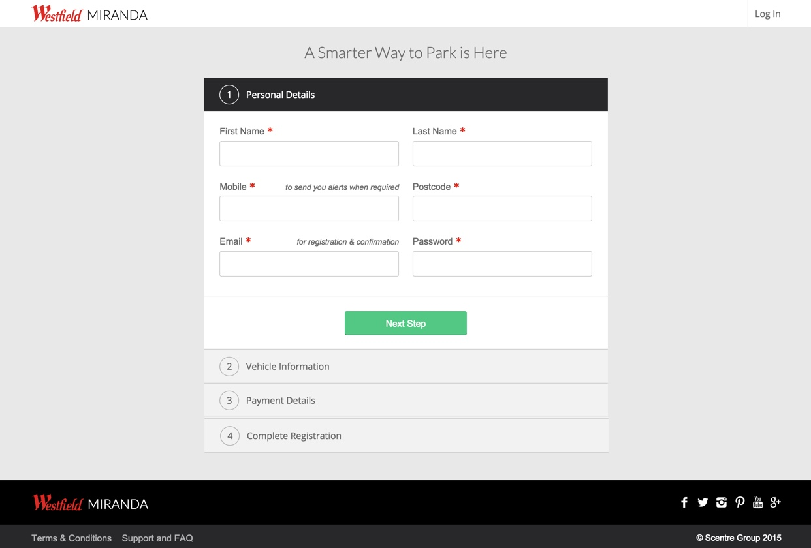
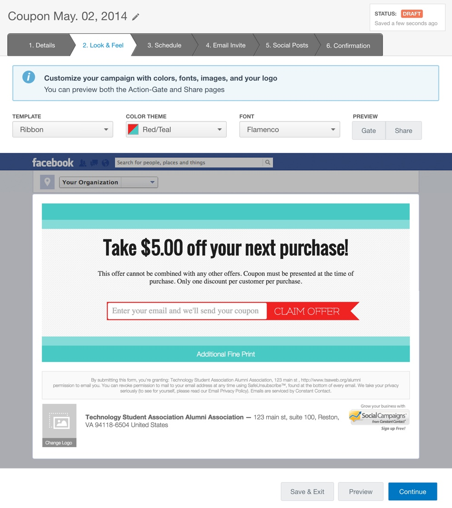
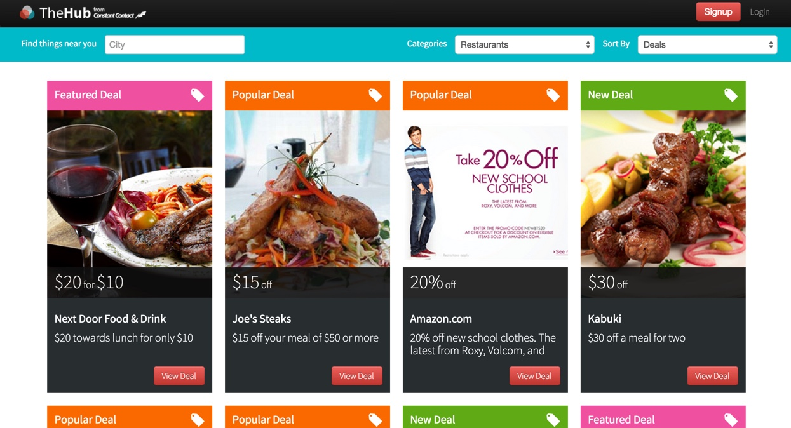

Projects
Miranda Car Park
The registration pages were created as a static site and then handed off to a third party for integration with their payment system. I Worked closely with the design team to build a responsive and accessible experience utilising HTML5, Sass and handlebars for templating. View the finalised site.
- HTML
- CSS
- Sass
- jQuery
Social Campaigns Beta
After many months of redesigning and user testing Social Campaigns was released in beta. I was responsible for the UI (html/css) for each step in the product flow. Additionally I was responsible for building the UI for creating mobile friendly campaign landing pages. The product was created using Rails, Backbone and Bootstrap. Later we transitioned away from Bootstrap in favor of an internally created front end framework.
- HTML
- CSS
- Bootstrap
- jQuery
Social Campaigns Prototype
As part of the redesign and relaunch of Social Campaigns I built a number of different clickable prototypes for user testing. This prototype was intentionally kept low fidelity, in order to test specific pain points with the product flow. A somewhat clickable prototype is available at http://cryptic-dawn-3553.herokuapp.com/. It may take a few minutes to wake up.

- HTML
- CSS
- Bootstrap
- jQuery
The Hub
During my tenure at Constant Contact I participated in a number of quarterly Innovation Jams (internal hackathons). The hub was designed as a space to bring together all the deals and offers created by CTCT customers. A somewhat clickable prototype is available at http://the-hub.herokuapp.com/. It may take a few minutes to wake up.
- HTML
- CSS
- Bootstrap
- jQuery
- Wireframes